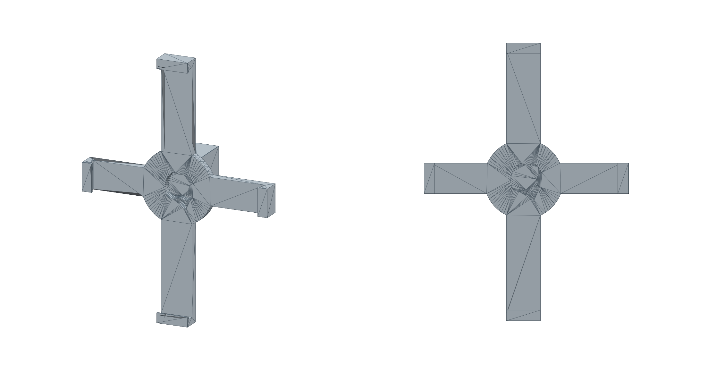

多模态机械臂
摄影 Agent
用 Python 串联 Claude 多模态构图、MediaPipe 姿态跟踪与 UR5e 闭环引导。
橱窗里的机械臂用动作吸引路人驻足，让观看自然过渡到主动参与。顾客轻点开始，跟随提示调整站位，拍完即可扫码带走自己的肖像。
多轮决策与状态校验
机械臂一动，相机画面也跟着动。如果此时立刻给出下一条站位提示，就可能把相机移动误判成顾客移动。为此，我让实机版只选一次构图，每次手势结束后先回位、再观察。多轮实验则用来验证另一个问题：什么时候值得让模型重新决策？
什么变化值得再次调用模型？
实验 Agent 以参与者入画、显式输入或等待中的画面变化触发判断。比较灰度帧时先扣除平均亮度，减少自动曝光造成的误触发。
模型如何选择下一步？
每轮结合最多 4 帧画面、16 条历史记录和上一动作结果。调度器读取结构化决策：发出一次手势、等待回应，或结束互动。手势完成后留出停顿，让参与者有时间回应。
迟到的回复还能执行吗？
控制器在接收回复时复核会话代次、请求时间和人物位置。新输入已取代旧请求、回复超过 25 秒，或人物已经明显移位时，旧手势都不会执行。
回归验收给同一画面整体提亮，系统应保持等待；在模型返回前提交新输入，旧回复应失效。多轮 Agent 的 49 项自动化测试全部通过，覆盖上述两种情况。 查看 Agent 回归用例 ↗
多轮实验的调用预算、交付取舍与源码
claude-agent接收最多4帧时序图像、最多16条历史记录、上一动作结果与当前人物状态，决定邀请、引导、等待或结束；返回结构化动作及短文案。
调用间隔至少5秒，默认请求上限20次；新消息、停止或离开会使旧决策失效。延迟结果与明显变化后的旧结果被丢弃，避免重放过时动作。
默认预算为 20 次模型请求。自动观察最多消耗 15 次，为显式用户输入保留 5 次。异步回复须属于当前会话；若超过 25 秒才返回，或人物已明显偏离请求时的位置，调度器会丢弃回复并清空待执行手势。
交付取舍：现场入口启用claude-guide＋single-plan，采用一次规划与本地闭环。多轮Agent留作实验能力，不与交付流程的验证结果混写。
从站位引导到取片
Agent 工作流
- 多模态构图规划
Claude 接收参考画面和人物位置，为本轮拍摄输出一个结构化构图目标。本地校验通过后锁定目标，后续跟踪沿用同一构图。
- 本地视觉与动作反馈
MediaPipe 跟踪头部位置和肩宽。UR5e 做方向手势，iPad 显示文字与灯光、播放预录语音。机械臂回位并稳定 600 毫秒后，系统才读取新画面。
- 到位判定与拍摄交付
实机的 iPad 单次规划模式设置 2 秒到位等待。计时满足且当前观测仍在容差内，才进入拍照倒计时，随后生成限时取片链接。
产品与技术文档
Robot Portrait Agent从橱窗驻足，到主动参与
产品目标
让路过的注意力转化为主动参与。商家通过可观看的机器人动作吸引顾客驻足，以个性化拍照提供参与理由，再用可下载的肖像延续体验与自愿传播。
| 场景与用户 | 从观看到参与的价值 |
|---|---|
| 商家 门店橱窗、品牌活动入口。 | 用机器人互动形成现场吸引点，让围观者理解体验并愿意进入；品牌与空间是概念表达，尚非已落地合作。 |
| 顾客与围观者 到店顾客、嘉宾与路人。 | 顾客得到清晰引导和可带走的照片；围观者隔着玻璃看懂过程。参与、停止和公开分享由顾客决定。 |
体验闭环
注意并进入 → 主动开始 → AI 构图 → 位置引导 → 到位倒计时 → 拍照与扫码下载。
若开展门店试点，我会记录驻足率、开始率、拍摄完成率和下载率，目前尚无门店实测数据。
拍摄完成率＝成功拍照的会话数 ÷ 主动开始的会话数。若退出集中在站位引导环节，我会优先测试顾客能否看懂方向提示。
构图规划与实时控制的分工
多轮实验探索了根据连续画面重新决策的方式。实机交付版每轮拍摄只请求一次构图。控制器锁定通过校验的目标，依据 MediaPipe 跟踪到的人物位置计算偏差，再选择预设手势，引导参与者调整站位。
相机安装在机械臂末端，提示动作会改变取景视角。控制器等机械臂返回参考位并稳定 600 毫秒后，再采纳新画面判断人物是否到位。这样，前后两次观测使用同一视角。
我设计了从开始、调整站位到取片的交互流程，并根据现场反馈修正方向提示和重启行为。开发中使用 Codex 辅助实现、调试和编写测试。


从开始到取片
注意并进入 → 明确开始 → 选择构图 → 引导与回应 → 拍摄 → 分享并结束
方向循环：重新观察 → 限幅提示动作 → 稳定的参考姿态 → 新画面。
访客界面：从开始到取片
界面录屏，2026年11月5日。红色表示需要调整，绿色确认到位。


界面输入与观察到的响应
| 记录的输入与操作 | 可见响应 | 设计依据 |
|---|---|---|
| 参与者进入相机画面，系统开始引导。 | 出现红色上边框和“再高一点”。 | 通过颜色和文字共同传达方向。 |
| 参与者调整并保持位置。 | 出现“保持不动”，随后显示绿色的“这就是你的最佳位置”。 | 区分继续调整与保持姿势。 |
| 参与者在拍摄时保持姿势。 | 倒计时后显示肖像与下载二维码。 | 提供准备时间和明确的完成状态。 |
交互与体验流程
| 输入与阶段 | 系统响应、运动与体验 |
|---|---|
| 准备显示设备 | 工作人员开启iPad前置相机。相机准备与访客点击“开始”是独立操作。仅建立连接不会启动体验，也不会返回之前的姿态。 |
| 明确开始 | 验证当前静止姿态并建立本次会话参考。完成14点开场动作，返回并稳定后再选择构图。 |
| 稳定后的新画面 | Claude仅选择一次构图。MediaPipe比较头部位置和表观肩宽。构图选择与运动确认是独立阶段。 |
| 人物偏离目标 | 执行一次限幅动作；检测到实际运动开始后触发灯光和预录语音。返回、稳定并读取新画面，留出时间供参与者回应。 |
| 观察门控 | 返回本次会话参考姿态，保持静止600毫秒，检查最新反馈并采集返回后的新画面。不将相机运动视为人物运动。 |
| 到位与拍照 | 满足条件后锁定拍照阶段：绿色提示、3-2-1倒计时、肖像拍摄及二维码。已处于合适姿势时可直接拍摄，无需提示动作。 |
| 停止与重新开始 | 取消会话、提示和拍照，通过反馈确认实际停止，不自动回原点。所选模式下，新参考需先清理、独立验证静止，并取得新的HOLD状态画面。 |
| 重复开始 | 对同一所有者的活动会话保持幂等：不重置控制轮次、心跳或拍照状态，防止重复触发。 |
| 结束与下一位嘉宾 | 嘉宾可点击“停止”；下一位须明确点击“开始”。新目标属于独立的重新构图操作，并非停止或自动重置。 |
AI 如何决定构图
产品决策｜让模型负责构图，让本地系统负责可靠执行
将“帮顾客拍好照片”拆成场景理解、目标规划、位置引导与拍摄交付。交付版每次开始或主动重新构图只请求一次规划，后续持续本地跟踪，减少重复请求与目标漂移；到位、停止和拍照均有明确状态。
① iPad采集图像› ② Claude规划构图› ③ 本地校验与跟踪› ④ 动作提示与拍照
模型接入：输入、约束与执行
| 接入环节 | 实现机制与产品约束 |
|---|---|
| 密钥与配置 | 通过configure-claude.py隐藏回显输入密钥，写入本地.env.local；读取ANTHROPIC_API_KEY。先用check_access()验证模型权限，无需发送相机图像。归档配置为claude-opus-5-5、medium。 |
| 视觉请求与提示词 | Python向https://api.anthropic.com/v1/messages发送POST：Base64编码JPEG＋current_pose；质量模式可附measured_context。提示词限定镜像全图坐标、可见人物及构图边界，禁止生成机器人关节或路径。 |
| 结构化结果与校验 | 以JSON Schema约束subject_visible、confidence、style、frame、target和explanation。target为头部横纵坐标与表观肩宽；本地拒绝置信度低于0.65、非法数值或越界几何，再按人物边距校验可行性。 |
| 执行闭环与异常 | MediaPipe持续比较人物与锁定目标；机械臂执行预设方向，返回参考姿态并稳定后重新观察。鉴权、限流、网络和无效响应分别映射错误码；未通过校验的结果不能进入动作执行。 |
结构化输出与本地验收
target- 头部中心的横、纵坐标，以及表观肩宽。三个值均以图像尺寸归一化，本地跟踪器据此计算偏差。
frame·style- 裁切矩形的四条边，以及头肩、半身或环境人像的构图类型。
subject_visible·confidence- 人物是否可见、模型对观测的置信度。校验通过后才进入引导。
explanation- 面向展示的构图理由。控制器只接受经过校验的数值目标。
失败样例：模型给出的头部坐标可能合法，但按这个目标拍摄会裁掉肩部。质量模式先按实测人物边界调整目标；空间仍不足时，依次尝试扩大裁切框、缩小目标肩宽。仍无法容纳人物，就拒绝该方案。整个修正过程在本地完成。
问题 → 修正 → 回归验证
相机动，被误认为人动：回到参考位、静止并取得新帧后再判断；以仿真记录及实体片段核对状态顺序。
停止后旧回复或旧参考干扰：用会话代次使异步回复失效，重新开始重建参考；测试覆盖延迟回复、停止和位移后重启。
模型响应与观察不可靠：以模拟响应测试低置信度、非法坐标、拒答和网络错误；诊断仅保留错误类型、时长及有限状态，不记录密钥或原始图像。
让机械臂给出方向提示


三维打印支架与STL模型
打印材料的刚性高于预期，安装时打磨了支架，使 iPad 能够插入并固定。图中展示的是实际装配过程与原设计。
系统架构
iPad相机与访客页面
前置相机；配对HTTPS上传JPEG；开始与停止。
计算机构图与本地跟踪
单一构图目标；持续检查头部位置和表观尺度。
原生控制与机械臂
URScript指令与RTDE反馈。实测运动开始触发灯光和声音；返回并稳定后读取新画面，到位后启动倒计时与照片临时存储。
三类独立决策：模型选择构图；跟踪评估人物；运动层仅执行已配置方向，同时检查控制会话、控制器状态与反馈。
| 配置 | 实现 |
|---|---|
| 范围与硬件 | 单人参与；iPad相机与界面；计算机视觉与控制；现场UR5e。UR10e配置与官方URSim证据共用同一运行核心。 |
| 视觉与构图 | MediaPipe 0.10.21；Pose Landmarker Lite；VIDEO；num_poses=1；OpenCV 4.11.0.86。Claude配置标识：claude-opus-5-5、medium、single-plan。 |
| 控制与界面 | Python项目0.2.0；Python 3.11-3.12；ur-rtde 1.6.5；HTML/JavaScript访客页面。配对HTTPS连接iPad与计算机；原生URScript/RTDE处理运动和反馈。 |
| 参考与负载 | 开始时读取控制器工具中心点（TCP），以已验证的静止姿态建立参考。历史TCP为278.6毫米、仿真活动TCP为0，均不能替代支架测量。运行程序不认证或重置负载与重心。 |
运行版本
公开版本 19ce8b3。机型配置与共享代码由同一份运行清单校验。
程序化运动、传感器与软件
有限的运动指令集
关节指令限值：0.7弧度/秒；开场加速度：1.2弧度/秒²；开场含14个点。各方向动作标称3.3秒，往复两次。0.7弧度/秒并非TCP速度0.7米/秒。实际时长取决于逆运动学、限值及稳定过程。
| 方向 | UR5e | UR10e | 灯光与预录提示语 |
|---|---|---|---|
| MOVE_LEFT | X -120毫米 | X -120毫米 | 左侧红边；向你的左边一点。 |
| MOVE_RIGHT | X +120毫米 | X +120毫米 | 右侧红边；向你的右边一点。 |
| MOVE_UP | Z +85毫米 | Z +85毫米 | 上方红边；再高一点。 |
| MOVE_DOWN | Z -85毫米 | Z -85毫米 | 下方红边；再低一点。 |
| MOVE_CLOSER | Y +60毫米 | Y -60毫米 | 四边红框；再靠近一点。 |
| MOVE_FARTHER | Y -60毫米 | Y +60毫米 | 四边红框；向后退一小步。 |
UR5e的前后方向已按现场安装修正；UR10e保留不同的映射。
通过运动塑造性格
问候发出礼貌邀请。限幅动作、返回、稳定与等待形成克制而清晰的节奏。相机随机械臂运动，因此每次提示后均先返回会话参考姿态，再次观察。提出要求、等待回应并坚持同一目标，揭示了专业引导与服从压力之间的张力。
预生成语音提示
英文WAV提示音由Piper en_US-ljspeech-high / LJSpeech生成（Rhasspy，无日期）。检测到实际运动开始后，每条方向提示播放一次。问候、等待与3-2-1倒计时共用声道。停止、静音或通信过期会取消旧音频。声音在iPad播放；本流程无对话式语音输入，历史麦克风代码在此版本未启用。
构图与跟踪
跟踪使用归一化头部参考坐标x、y和表观肩宽w。头部位置取可见鼻、耳关键点的中位数；肩宽为左右肩关键点的横向间距。Claude根据完整图像选择目标和构图类型；本地边距及几何检查评估可行性。
| 条件 | 原型策略 |
|---|---|
| 画面边距 | 预留3%。 |
| 尺度容差 | 目标肩宽的10%；最小为图像宽度的0.008。 |
| 前后方向提示 | 三个新鲜稳定样本；间隔≤300毫秒；相对变化≤12%。 |
| 可靠性不足 | 肩部被裁切、转身或置信度低时，抑制前后方向提示。 |
这些是启发式规则，并非厘米级距离、三维定位、群体层面精度，也不代表对个人意图的解释。
实机测试与数据边界
52.7 秒的实机测试流程
UR5e 带动平板改变朝向。参与者先看到调整方向的提示，到位后进入倒计时，最后在平板上看到肖像。这段实拍记录了引导、确认和取片三个环节。


停止之后，顾客如何重新开始？
实机测试时，机械臂停在偏离原参考位的位置，再次点击“开始”时流程无法继续。我调整了重启规则：点击“停止”即取消本轮动作和待拍照片；再次开始时，先确认机械臂静止，再将当前位置设为新参考位。在 UR5e 和 UR10e 的 URSim 仿真中，我验证了偏离参考位后停止、重新开始并再次执行方向提示的完整过程。
恢复、离开与停止
仅识别到的短暂iPad或本地通信中断可在3秒内保持并恢复。停止、离开页面、控制器故障或超时均结束流程。URSim覆盖1.2秒中断，并非所有网络故障。观察不可靠时暂停新引导。拍摄阶段锁定后，仅跟踪丢失不会取消照片，但停止或会话过期会取消。离开既不等于完整自动重置，也不代表同意分享。
设计决策
安全：限幅运动和静止检查属于软件控制，不能替代固定装置、负载、急停可达性及安全间距检查。玻璃、桌子和围栏用于组织空间，不构成安全认证。
无障碍：文字、方向灯光和语音共同提示；绿色到位提示也配有文字。尚无最终对比测试覆盖不同身高、坐姿、听视力或运动限制。
自主权：预录提示无需麦克风。点击“开始”不授权公开传播；拍摄、下载和公开分享需分别征得同意。
肖像与云端数据
| 阶段 | 行为与限制 |
|---|---|
| 相机与构图 | 配对iPad上传JPEG；选取的场景图像及测得的人物几何数据发送至Claude Messages API。 |
| 拍摄 | 在拍照阶段捕获当前图像。上传时检查所有者、会话和拍照状态。倒计时不保证每帧都处于理想位置；锁定阶段不会持续撤销。 |
| 临时分享 | 计算机内存仅保存当前JPEG，最大4 MiB，最长300秒。新照片替换旧照片；它不是磁盘相册或公共平台。 |
| 过期与清除 | 定时到期并在读取时检查过期。过期、已清除或旧令牌返回404；响应使用no-store。停止或重启清除旧分享，延迟上传可被取消。 |
| 访问与副本 | HTTP照片服务提供随机持有者链接。可访问局域网中任何持有链接者均可下载；这不属于身份认证。已下载文件、截图和浏览器副本不会被删除。 |
照片发布前后，服务端分别核对访客、会话代次和拍照状态。若上传期间顾客按了停止，即使照片刚生成链接，服务端也会按该照片的令牌清除它，返回 HTTP 409，避免将上一轮肖像交给下一位顾客。
关键工作流的验收与回归
以下四组 Python 自动化测试共 28 项，全部通过。用例通过本地输入和模拟反馈检查软件行为。机械臂的实际动作见本章的 UR5e 实拍记录。
实物原型与场景设想
实物原型


AIGC 场景演示
ChatGPT 生成场景图，即梦 AI 生成视频。